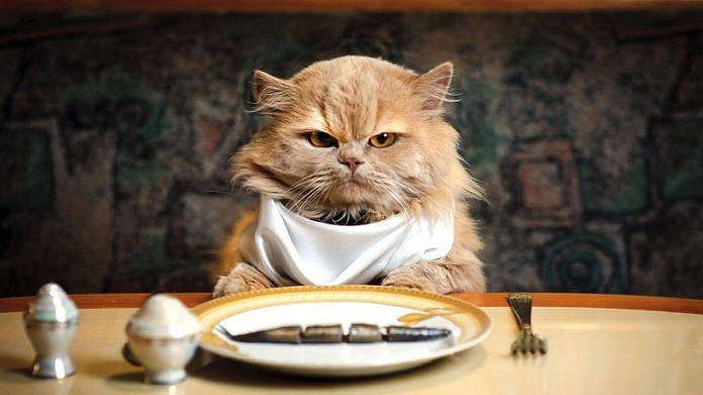
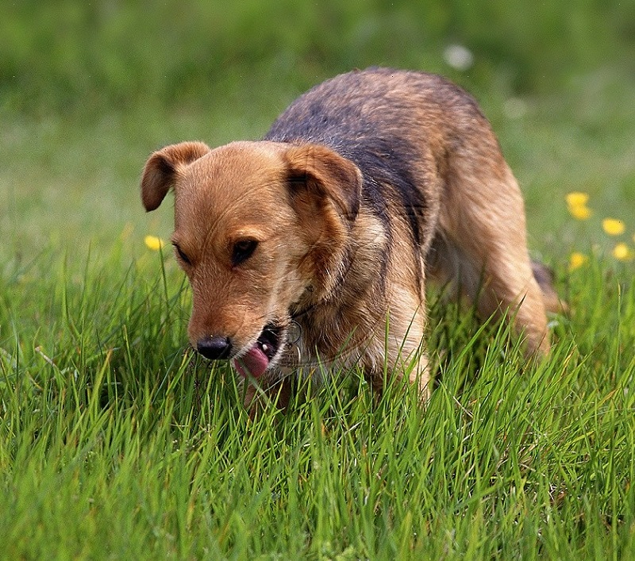
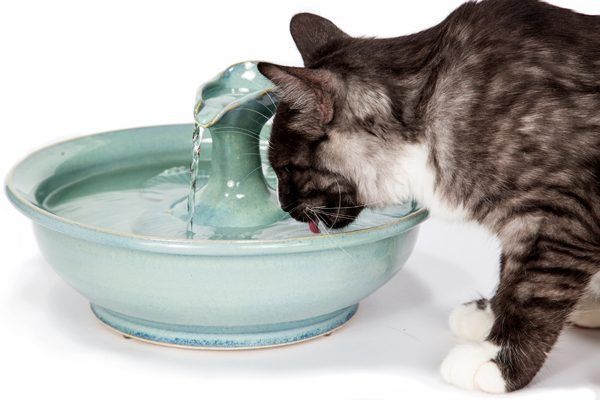

Pet nutrition needs are not the same as ours, but many of us are clueless about what exactly they are. This primer on dog and cat nutrition will find out in on what your pet needs to stay healthy and fit
consider these facts:
Cats need twice as much proteins as humans and dogs do.Adult humans need 17-21% calories from proteins while ctas need double this amount from fish and meat. They require a vital amino acid called Taurine critical for a cat's normal heart, eye, and reproductive function.
Proteins should make up about 18% of your dog's diet as human and they can aso eat and very well enjoy vegetables
Fats are a good source of energy for cats and dogs. They also get the fatty acids they need and aid in absorbing fat-solubule vitamins like Vitamins A,D and E. Cats sometimes enjoy the taste of fat too much and as a result may end up becoming obese which can cause athritis and diabetes
Dogs need fat to keep their coat, skin,nose and paw pads healthy. 9-15% of an adult dog's calories should vcome from fat.
Animals can't survive without plenty of clean water, and your pet is no different. Refill the water bowl daily and be sure to give her extra water after along walk ors game
